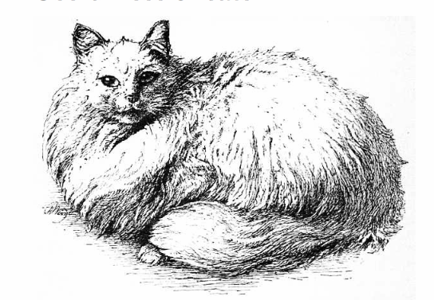

Introductory
Ther First Cat Show
Habits
Trained Cats
Usefullness Of Cat
Usefulness Of Cat
In our urban and suburban houses what should we do without cats? In our sitting or bedrooms, our libraries, in our kitchens and storerooms, our farms, barns, and rickyards, in our docks, our granaries, our ships, and our wharves, in our corn markets, meat markets, and other places too numerous to mention, how useful they are! in our ships, however, the rats oft set them at defiance; still they are of great service.
How wonderfully patient is the cat when watching for rats or mice, awaiting their egress from their place of refuge or that which is their home! How well Shakespeare in Pericles, Act iii, describes this keen attention of the cat to its natural pursuit!
The cat, with eyne of burning coal, Now crouches from (before) the mouse's hole.
A slight rustle, and the fugitive comes forth; a quick, sharp, resolute motion, and the cat has proved its usefulness. Let any one have a plague of rats and mice, as I once had, and let them be delivered therefrom by cats, as I was. and they will have a lasting and kind regard for them
Let any one have a plague of rats and mice, as I once had, and let them be delivered therefrom by cats, as I was, and they will have a lasting and kind regard for them.